To accurately determine the overall design of our application, we decided to create two key storyboards that
would highlight our core features and a typical user’s interactions with them.
User Thought Process
The storyboard highlights the actions and thoughts of a typical user. The user opens our application to
identify potential ongoing issues in their community. From there the user sees an issue important to them
and shares it with their friends. This generates community engagement and gives more attention to the
issue so that it can be reported and solved.
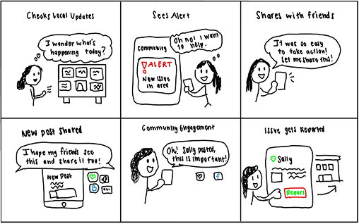
Storyboard: user thought process
Application Features
The storyboard demonstrates the core features we want in our application: a local feed for quickly
identifying events and community needs, a verification page to review posts and ensure credibility, a
reporting page to identify and update issues, an action page to select important topics, and a live
discussion page for community interaction.
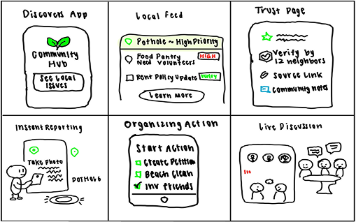
Storyboard: core features
Task Flow:
Task Flow Overview
These task flows highlight the four core tasks our group recognized as necessary components for our
application: sharing resources/issues with others, finding a local event, helping others connect through
events, and taking action on local issues. Each task supports our overarching goal of connecting users to
local events and helping them support their communities more efficiently.
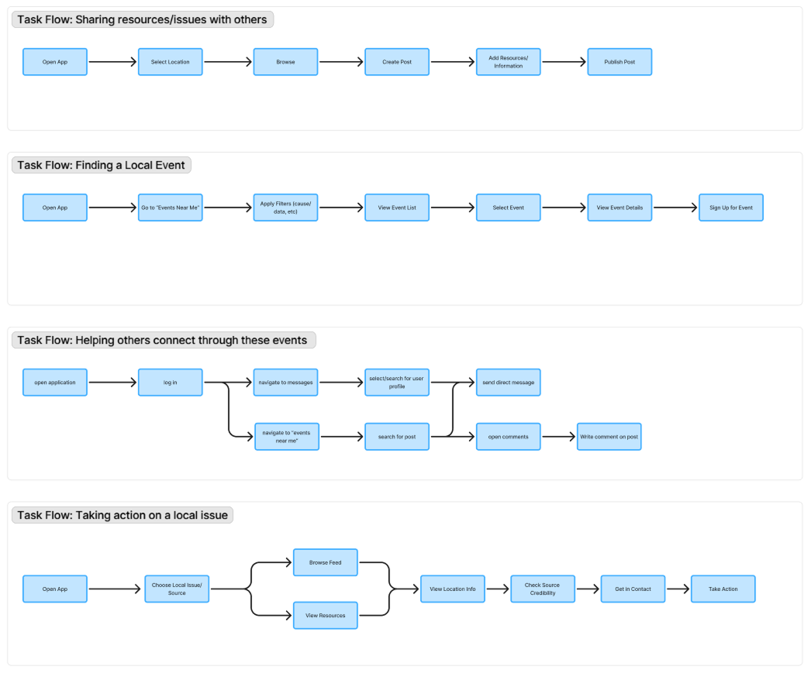
Task flow diagram
User Flow:
User Flow: Posting resources & local issues
This user flow explores the mindset of a typical user navigating our application to post a local
resource/issue. It begins with opening the app, selecting the correct community, creating a post, choosing
the post type, and returning to the home page.
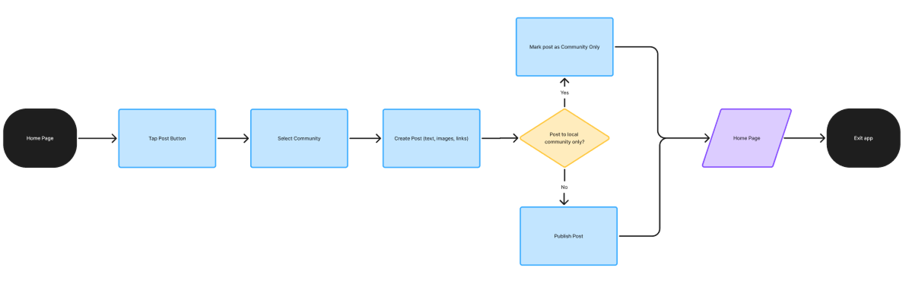
User flow: posting
User Flow: Finding and attending a local event
This user flow highlights how a user can find and attend an event. Starting with the Events page, users
can filter for relevant events, select an event, decide if it fits their schedule and interests, then sign
up and attend. If it doesn’t fit, they repeat the cycle until they find an event that works.
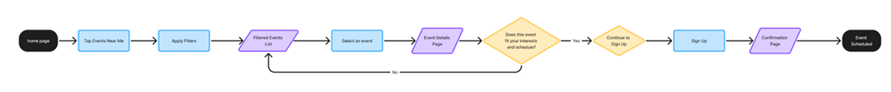
User flow: events
User Flow: Helping others connect through these events
This user flow led to a key realization: there are multiple ways for users to connect. Users can message
individuals directly via a messaging page, or communicate through comments on posts (if logged in) to
engage community leaders and peers interested in the same topic.
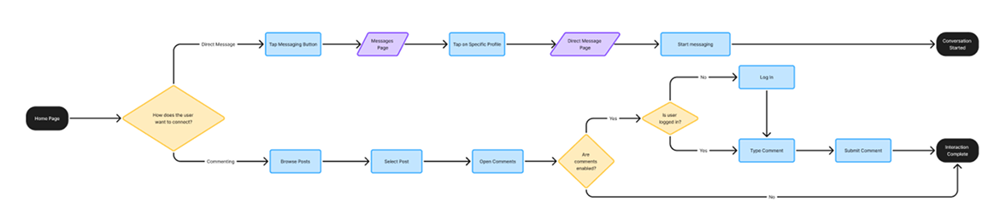
User flow: connect
User Flow: Taking action on a local issue
This user flow shows steps for taking action: the user chooses to browse the feed or view resources, then
checks location and source credibility. If credible, they get in contact with the source and decide
whether to take action now or save for later and exit.
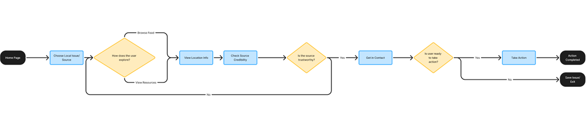
User flow: action
Initial Mockups:
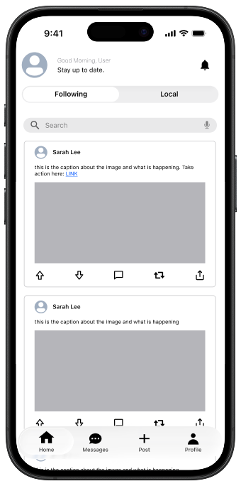
Home Page
The home page allows users to stay updated with local events and issues, as well as issues shared by peers.
Users can quickly interact with posts by upvoting/downvoting, commenting, and reposting/sharing to spread
the word.
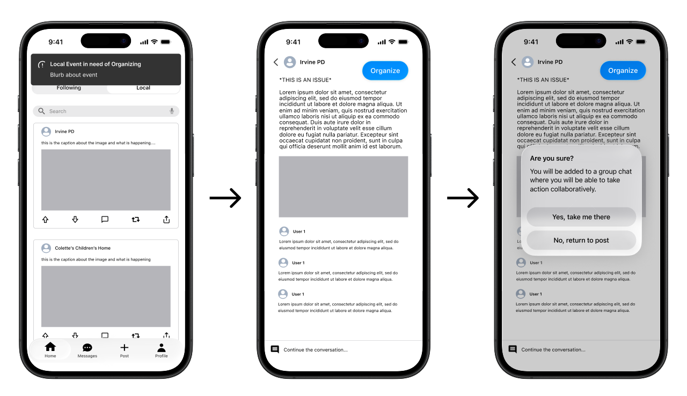
Organize
Users receive notifications about issues in their area that need organizing. Clicking a notification
navigates them to the post. If they choose to contribute, they can select the Organize button and confirm
joining a group chat to take action collaboratively.
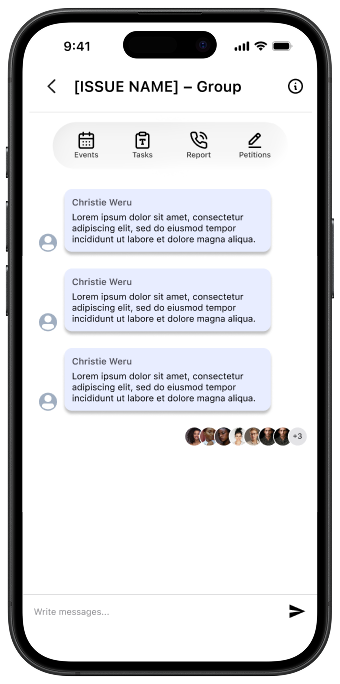
Groups
Groups provide a centralized platform to collaborate and take action: organizing/scheduling events, managing
tasks and next steps, making calls to report issues, signing/sharing petitions, and discussing issues with
peers through messaging.
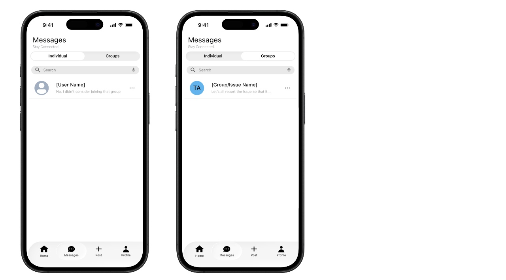
Messages
Users can stay connected and message others individually or within groups.
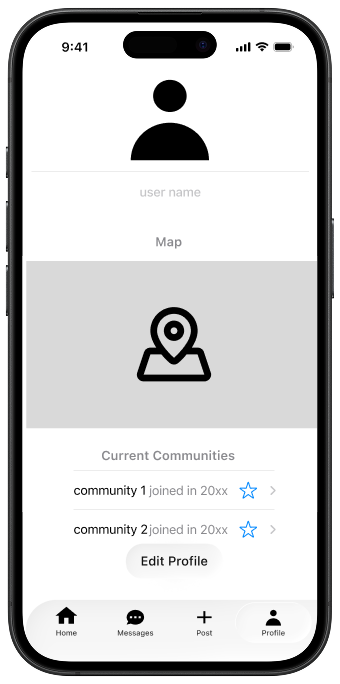
Settings
The settings profile allows users to edit their username, location, and communities they’re a part of,
providing a more tailored experience.
How Research Informed Our Design
Our prototype is grounded in key insights gathered from user research, which highlighted several core needs:
timely access to important issues, a centralized way to take immediate action, and meaningful connection with
like-minded peers. These insights directly shaped our design decisions throughout the storyboarding, task flow,
and user flow development process. To address the need for timely awareness, we designed a real-time
notifications feature that keeps users informed about relevant events and opportunities as they arise. To
reduce friction between awareness and action, we created a centralized hub within Groups where users can
access resources and take next steps through clearly defined action buttons. Finally, to support users’ desire
for community and sustained engagement, we incorporated a messaging system that enables users to connect and
collaborate with others who share similar interests. By intentionally aligning each feature with validated user
needs, our design aims to reduce barriers to participation and create a more seamless path from awareness to
action.